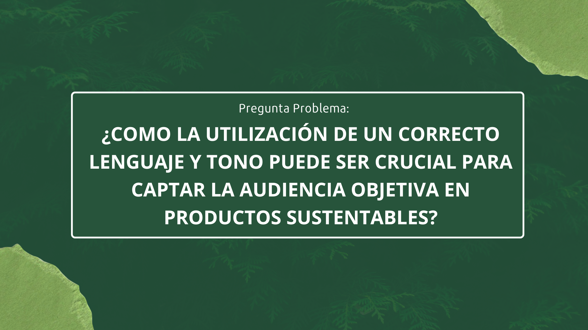
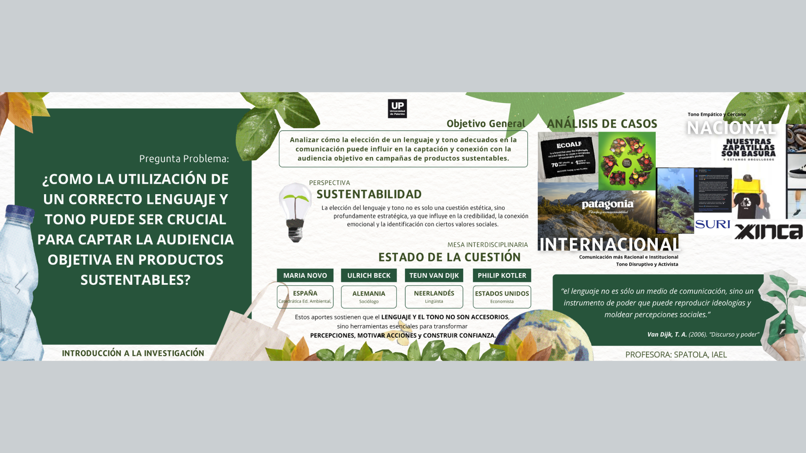

Trabajos Académicos
INVESTIGACIÓN ACADÉMICA
Sustentabilidad: Lenguaje y Tono en Comunicación
Fungus es un proyecto académico de diseño de producto orientado al desarrollo de un termo pensado específicamente para el uso en automóviles, abordando aspectos funcionales, ergonómicos y formales desde una mirada integral del diseño.
- Institución: UNIVERSIDAD DE PALERMO
- Carrera: Licenciatura en Diseño, Tecnologias y Negocios
- Materia: Introducción a la Investigación
- Premio: —
- Año: 2025

Proceso
En esta etapa se desarrolló el proceso conceptual, técnico y experimental del proyecto, abordando distintas instancias de análisis, pruebas de uso, materialidad y validación formal.

Material Académico
Presentación del objeto final, definición formal y resolución del sistema.